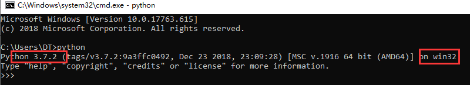
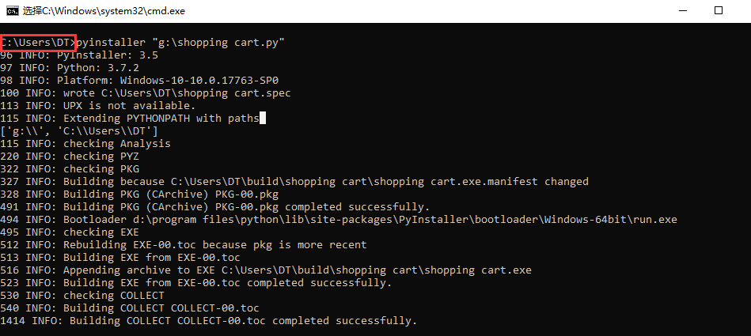

我们很多时候，写好的程序需要打包成.exe文件才可以发给客户，那么今天我就来谈一谈，如何将一个写好的Python程序打包成exe文件！
首先，我们我们使用到的工具是python 3.7 和 Pyinstaller这两个工具，python 3.7我相信大家都不陌生了吧！因为我们写python程序使用的都是它。那就让我们来讲一讲Pyinstaller 这个东东吧！首先，它的官网先亮起来：http://www.pyinstaller.org 我去怎么是全英文的，没关系，通过官网我们只需要知道Pyinstaller这玩意只能工作在Python 2.7和Python 3.4~3.7版本就ok了！
了解了这些，那我们就先来看看我们的Python是什么版本呗！经典的来了，打开cmd，输入python即可！

Python 3.7完美，符合要求，下面我们就来安装Pyinstaller，怎么安装呢？很简单，打开cmd，输入 pip install pyinstaller 即可！
小编在安装Pyinstaller的时候老是会安装不成功，多次尝试 pip install pyinstaller 命令后，出现了success。安装成功了，完美！
如果你还不确定，你到底有没有安装成功，拿出大招，cmd中输入：pyinstaller -v ，出现版本号，如下图所示，就表示您已安装成功！
好了，准备工作一切就绪，此时此刻，我们就可以拿出我们撸好的代码了！
小编这边把代码放在了G盘的根目录下，此时打开cmd，执行命令：pyinstaller “g:\XX.py” 即可！
这里需要注意的是 pyinstaller 后面的路径一定要加上引号！！！ “g:\XX.py” 否则就会出现如上的错误！我们试着加上引号后：
successfully出现了，完美！！！
此时此刻，你会发现，在你的python文件的当前目录下，出现了一个__pycache__的文件夹。
我们还会发现在C:\users\DT目录下，出现了一个dist文件夹。

打开dist文件夹：出现了一个和我们python文件同名的文件夹，
打开这个文件夹，我们来看看：
.exe文件出现了！！！完美！！！
此时，我们只要把这个文件夹压缩打包就OK了！！！
有没有帮到你们！！！有的话，就评论完美！！！🙂